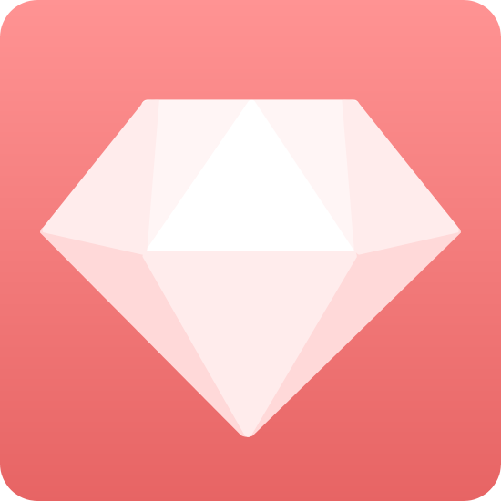

Welcome to Bitcoinmeetups.org

FAQ:
How to join our groups?
Join our GetGems (Gems Messenger) group(s) by sending a message to Gems User ID: "GetGemsGroups" and the local organizer if there is one yet
Download the GetGems client for Android by clicking here if you have not already got it installed
If you are asked about who referred you when installing the app, please fill out user GetGemsGroups as a referrer and I will be grateful.
LIST OF GETGEMS (GEMS MESSENGER) TELEGRAM AND BITCOIN MEETUPS
LOCATION (MEETING POINT) - TIME - ORGANIZER GETGEMS (GEMS MESSENGER) ID
Berlin - Gesundbrunnen Center - Saturdays 6 PM - Organizer Gems ID: GetGemsGroups (Become an organizer!)
Hanoi - Parkson Mall - Fridays 5 PM - Organizer Gems ID: GetGemsGroups and Gemerous (Become an organizer!)
Hannover - TBA - Tuesdays 2 PM - Organizer Gems ID: GetGemsGroups and Karmala (Become an organizer!)
Helsinki - TBA - Saturdays 1 PM - Organizer Gems ID: GetGemsGroups and Frost
Kuala Lumpur - Nasi Dagang Capital, Damansara Utama - Sundays 11 AM - Organizer Gems ID: GetGemsGroups (Become an organizer!)
London - West One Shopping - Saturdays 3 PM - Organizer Gems ID: GetGemsGroups (Become an organizer!)
New York - Times Square - Saturdays 7 PM - Organizer Gems ID: GetGemsGroups (Become an organizer!)
Nairobi - Westgate Shopping Mall - Mondays 3 PM - Organizer Gems ID: GetGemsGroups and Drimin (Become an organizer!)
Singapore - Marina Square - Thursdays 6 PM - Organizer Gems ID: GetGemsGroups (Become an organizer!)
Tianjin - Quanyechang Shopping Mall (Heping road) - Thursdays 4 PM - Organizer Gems ID: GetGemsGroups (Become an organizer!)
Tokyo - Lumine Yurakucho - Tuesdays 4 PM - Organizer Gems ID: GetGemsGroups (Become an organizer!)
RANDOM RAMBLINGS ABOUT GETGEMS AND OTHER STUFF
So, I'm not sure if I should call the client Gems Messenger or Getgems messenger now. The chat is called Gems chitchat... But the product is called Getgems in the Play store. Time will tell I suppose. Seems to be doing well, already 1000-5000 downloads. I tried accessing the counterwallet using the Gems passphrase today, worked well. Initially I did not understand that Gems actually provides a built in counterwallet. Yup, works like a charm. It's right there at counterwallet.io. Sweet. Useful. The familiar counterwallet. Meanwhile, Bitcoin doesn't seem to be doing to well at all. Bitcoin to the anti-moon as I say. Poor old Bitcoin. Everyone cashing out. It might be doing worse in the future. Or not. Who knows. I am quite certain the sun will raise for years to come. When it comes to Bitcoin though it is volatile as ah... As something very volatile. So, what about the meetups? People are meeting all the time. Usuall at work. The meetups at meetup.com are different. Most people just go there to share ideas about a subject of mutual interest. It is an interesting concept. However, it can be intimidating going to those meetups. You never know who shows up. And some of them start kinda late. Don't know about you guys but 9 PM is no time for socializing for me. The timing is important. Has to be a good time when mosdt people are able to attend. Maybe on a Sunday. But some people don't like Sundays. The location is imporant too. If you have a metetup at a coworking space people may have to pay an entrance fee. But you can't have the meetup on the middle of the street. Cars would honk. The loation has to be safe, secure, sound and preferably with good aircon and amenities and did I mention cheap?
Anyways, life is also about having fun. You know, having fun is one of the most important things. Especially in the tech community it gets a bit too technical sometimes. Well it can't get too technical. But fun is kinda like the opposite of technology. I'm not saying technology cannot be fun. Well I do. Technology is about efficiency. Fun is about fun. Look at the crocodile for example. A horned beast, stemming from the age of the dinosaur. Look at that grin. The croc knows how to have fun. Oh yeah. Or look at the monkey. Swinging from the trees. Wide grin. He's got a lot of fun. Oh yea. Monkey business all day all year round. He lives in a forest. There are so many trees over there. Some trees are tall. Some trees are not so tall. Perhaps it is a rainforest. Unfortunately there are no orang itans in the rainforest of Amazonia. So let's have a look at the sea. There are a lot of creatures living in there. In that salty soup. Even a teaspoon is full of millions of small living beings. These kind of animals like salty water for some reason. And the sea is very salty indeed. Look at the anemones. To be honest I can hardly remember what an anemone looks like, that's how detached from nature I have become. But the anemone is definitely one of those creatures thriving in the sea. Having its life there. Not too bothered about the latest tweets. Just doing its anemone business. Perhaps eating a bit. And here comes Mr. Jellyfish. How's it going Mr. Jellyfish? Where are you going? Floating around? Or actually have a direction? Oh, you want to go North. Go North my friend. Go in peace. The jellyfish is like the diamond of the sea.
Real diamonds of course are created under enormous pressure in mountains. That's why we have to dig them out. They consist of coal. Very compressed coal. They sell for a high price. Perhaps the price of Gemz will be higher... Perhaps not. Who wants to open a diamond to Gemz exchange? There's a donkey pal of mine outside of Athens. He told me about this idea. Whispered it in my ear. Then he asked for a carrot. Sure, I said. He cannot go to the shop by himself. After that he went back to his hut to watch tv. I hope he found a good show. Personally I rarely watch TV. What to watch? Silly contests? I want freedom to choose what I look at. Radio? Same thing. I wish everyone had their own radio station. Radio is such a powerful technology. We should put radios in a cubesat. Or something like that.